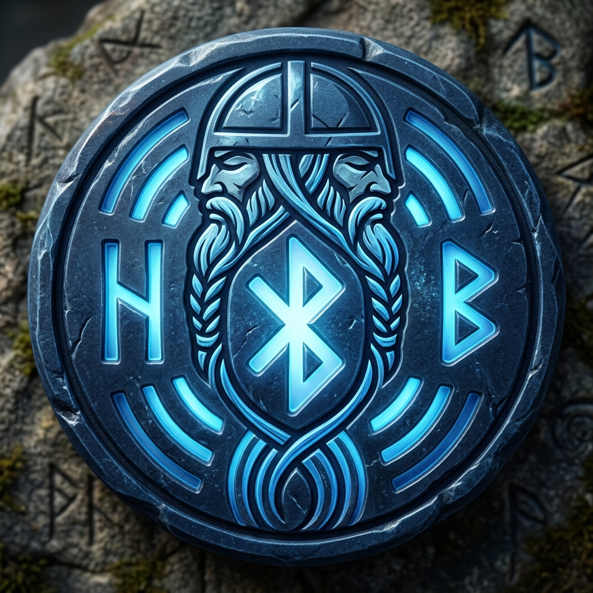
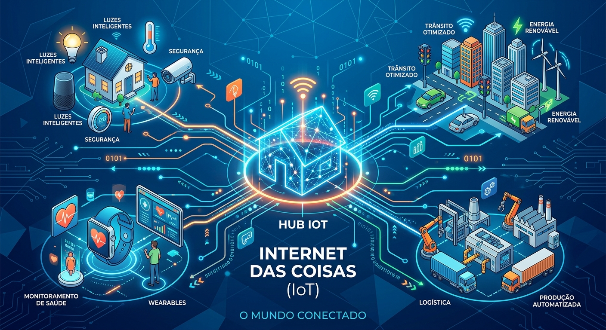

meu primeiro post
por: Taylor francisco
boas vinda ao meu novo blog! aqui vou compartilhar dicas de programação e curiosidade da area de tecnologia.
vou compartilhar conhecimentos sobre tecnologia e programação
por: Taylor francisco
boas vinda ao meu novo blog! aqui vou compartilhar dicas de programação e curiosidade da area de tecnologia.

por: Taylor francisco
O nome é uma homenagem ao rei dinamarquês Harald "Bluetooth" Gormsson (século X), famoso por unificar as tribos da Dinamarca e da Noruega. A ideia dos criadores foi associar a unificação das tribos à conexão de diferentes dispositivos (celulares, computadores, fones) sob um único padrão. O logotipo da tecnologia é a junção das duas runas nórdicas que equivalem às suas iniciais: Hagall (ᚼ) e Bjarkan (ᛒ).
por: Taylor francisco
O computador é a ferramenta central da era digital, projetado para processar dados e executar instruções por meio do trabalho conjunto de hardware (a parte física) e software (os programas e o sistema operacional).
fonte:IEEE - Computer Society Standards E architecture Guides:

por: Taylor francisco
A tecnologia não se resume mais apenas a telas de computadores ou smartphones. Ela está, literalmente, se integrando ao tecido do nosso dia a dia através da Internet das Coisas (IoT).
Mas o que isso significa na prática?
A IoT refere-se a uma vasta rede de objetos físicos — "coisas" — que são equipados com sensores, software e outras tecnologias com o objetivo de conectar e trocar dados com outros dispositivos e sistemas pela internet. Esses objetos vão desde simples utensílios domésticos até ferramentas industriais sofisticadas.
fonte:MIT Technology Review: